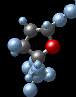

DNA Structure Activity
Problem 4: The deoxyribose sugar ring
Examine the views labeled "C11-G33 base pair" and "T9-A35 base pair". A, G, C, and T refer to the 4 different nucleotides that are the basic building blocks of DNA. Nucleotides are composed of three components: a phosphate, a sugar, and a nitrogen-containing base. From the "Select Menu" choose "deoxyribose sugar". For a closer look at the sugar, examine the view "sugar (deoxyribose)". Return to the views "C11-G33 base pair" and "T9-A35 base pair", and from the "Select Menu" choose "sugar ring atoms". Notice that each sugar has a ring of atoms with links both to the phosphate group (for review, see Question 1) and the nitrogen-containing base. The sugar ring contains:
Tutorial
|  |
The 5 atoms of the deoxyribose sugar ring are emphasized in the illustration. Note that the 5-membered ring is composed of 4 carbon atoms and 1 oxygen atom.
To recreate this view:
The view "Antiparallel DNA strands" also emphasizes the 5-membered deoxyribose sugar rings. |


University of Arizona
Modified: May 27, 1997
Contact the Development Team
http://biology.arizona.edu
All contents copyright © 1997. All rights reserved.